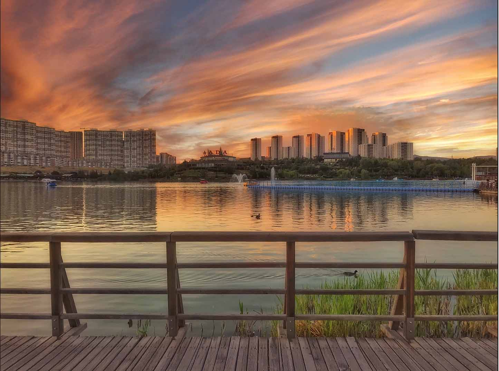

Ankara'nın doğal güzelliklerinden biri olan Göksu Parkı, şehrin kalabalığından uzaklaşıp doğanın tadını çıkarmak isteyenler için ideal bir mekandır. Park, içinde bulunan Göksu Deresi ve göletiyle doğa ile iç içe keyifli bir atmosfer sunar.
Göksu Parkı'nın en keyifli aktivitelerinden biri, gölette kayıkla gezmektir. Park içinde bulunan kiralık kayıklarla Göksu Gölü'nün sakin sularında gezinti yapabilirsiniz. Kayıkla gölde dolaşırken, doğanın huzur veren manzarasını izleyebilir ve stresinizi atmaya yardımcı olabilirsiniz. Özellikle bahar ve yaz aylarında, yeşillikler içinde yapılan bu gezinti, ziyaretçilere unutulmaz anlar yaşatır.
Göksu Parkı'nın göletinde yaşayan ördekler, parkın en sevimli sakinlerindendir. Gölette özgürce yüzen ve etrafa neşe saçan ördekler, ziyaretçilere keyifli bir görsel şölen sunarlar. Ayrıca, park içinde bulunan çeşitli bitki türleri ve yaban hayatı da doğa severlerin ilgisini çeker. Kuş gözlemciliği yapmak isteyenler için Göksu Parkı, önemli bir noktadır.
Göksu Parkı, şehir stresinden uzaklaşıp doğayla iç içe vakit geçirmek isteyenler için ideal bir kaçış noktasıdır. Park içinde yürüyüş yapabilir, piknik yapabilir veya sadece doğanın tadını çıkarabilirsiniz. Ayrıca, çocuk oyun alanları ve spor alanları da parkta bulunmaktadır, bu da Göksu Parkı'nı ailelerin tercih ettiği bir destinasyon haline getirir.
